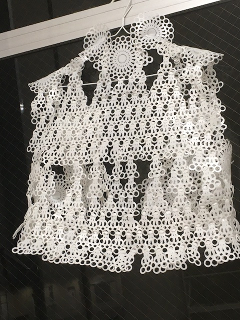
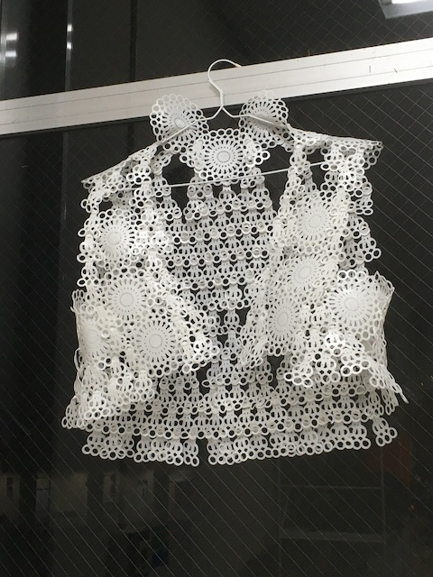
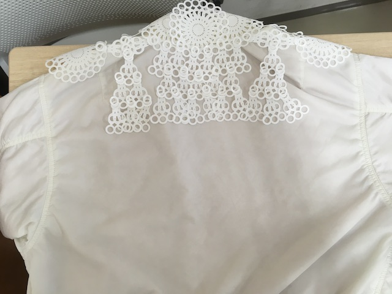

・レースパーツ（データ）
＊１個出力するのに５分弱
・レース１周バージョンパーツ
・ドライヤー
・TRFフィラメント
・３Ｄプリンター
完成イメージ
 

このように実際にある服を下書きに使うと、サイズのミスが減る。もちろん型紙で作っても良い。
一度熱変形させた後、一定の熱を加えると元の形に戻っていきます。
動画
椅子等を使って立体的に仕上げていきます。トルソーなどがある方がTRFの服は作りやすいかもしれません。
熱しすぎ注意。TRFが溶けてくっついてしまいます。
1.TRFの難点として、形が決まったあと固まってしまうところ。
薄すぎると折れます。
あと体にフィットせず、肩こりがひどくなりそうなので、服というより矯正器具のような感覚でした。
もっと着心地にこだわって作りたいです。
2.立体的な服作りの技術が必要
今まで家庭科で習ってきた服作りは、平面的な作りでTシャツ等を作ってました。
だが、今回のように熱変形で作るならば、立体的な作り方を取り入れてく必要があります。
針金の造形のような無から有を生み出すような、切削で削るのではなく、ある布を切って使うのではなく、フィラメントだけで造形していくイメージ。
まさに3dプリンターの造形と似ている。
それをパーツを組み合わせて機械の外で人の手でやらなければいけなかった。
3.再現性が低い
パーツはデザイン重視で計算して作ったパーツではなかったので、正直行き当たりばったりで形を整えてました。
ですが、今後は計算して組み上がるパーツを作っていく必要があります。
そうすれば、どんな体型の人にも合わせて作れるようになってくるのではないだろうか。